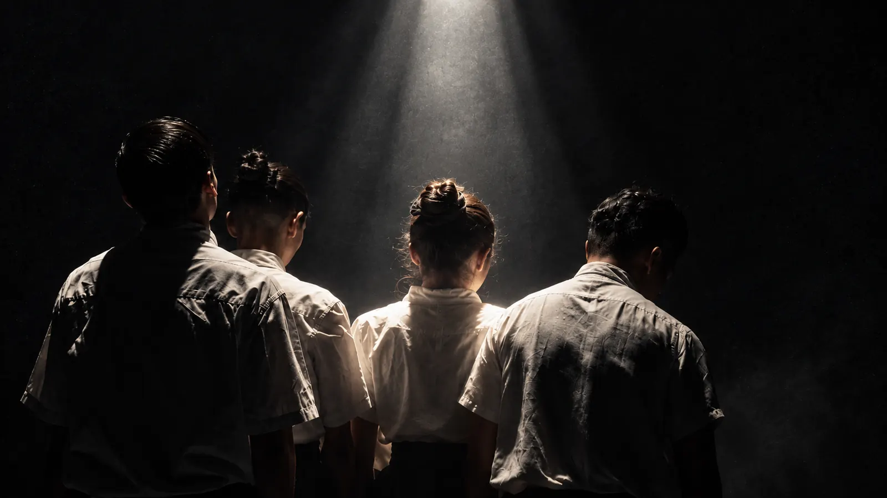
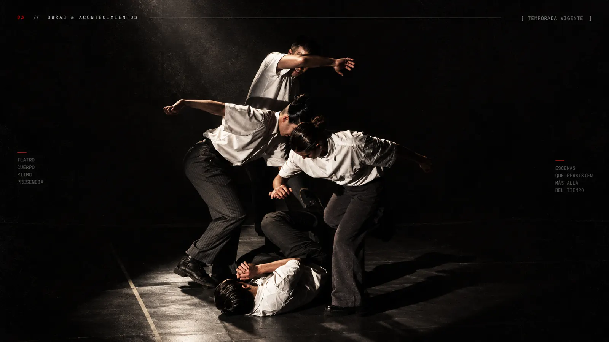
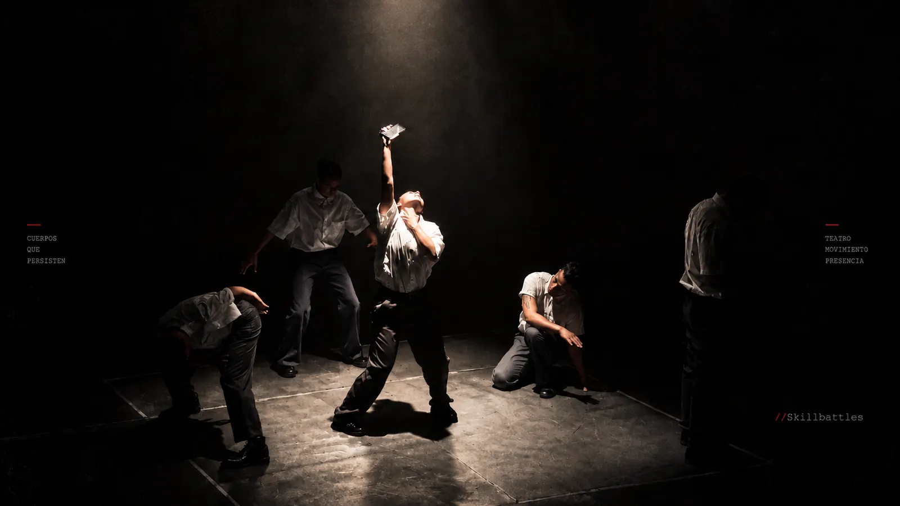

Valentina Nuñez
Actriz / B-girl
Ensamble de la película La Ola, actual campeona de la Red Bull BC One Cypher Chile, Teatro Aleph Francia/Chile, Ceetuch y proyecto coreográfico Mauro Barahona.
JD STUDIOS / TEATRO FÍSICO
Una mañana cualquiera.
Un mensaje que lo cambia todo.
01 / LA OBRA
Benjamín, una mañana cualquiera, toma el metro rumbo a su trabajo, como todos los días. Todo parece seguir su curso habitual, hasta que un mensaje rompe la monotonía de lo “normal”.
Al salir del metro siente que el mundo se detiene. El ruido se desvanece y él se ensimisma, hasta que una llamada de su jefe le cuestiona por qué no ha llegado al trabajo. Entre el caos de la ciudad y su angustia, choca con un desconocido que deja caer un montón de papeles. Se disculpa, lo ayuda y recibe un chocolate como muestra de gratitud: un gesto pequeño que le devuelve un respiro en medio de tanto caos.
La calma se desvanece cuando, a su lado, asaltan a un transeúnte y lo pasan a llevar. Cae su celular y queda incomunicado. Benjamín rompe en ira y termina involucrado en la pelea, donde finalmente cae: apuñalado, desbordado, silenciado. Muere en la calle, víctima de una cadena de acontecimientos que lo llevaron al límite.
Un día cualquiera convertido en una tragedia.
Consultar sobre la obra ↗INCONSISTENCIA / EN ESCENA



//Inconsistencia Duración ≈ 30 minutos.
02 / PROPÓSITO
Explorar, a través del lenguaje escénico, el colapso emocional y psicológico que viven cientos de personas día a día: la violencia urbana, la indiferencia social, la falta de contención y de empatía por el otro.
03 / FUNDAMENTO
Benjamín es el ejemplo de cómo la sociedad cotidiana se vuelve feroz, aplastante y poco inclusiva. La presión social pesa cada vez más, y pareciera que el trabajo siempre será lo más importante, por sobre el bienestar físico y emocional.
Vivir estresado, agobiado o a la defensiva no produce calidad de vida. El sistema se vuelve poco empático y se pierde el sentido de pertenencia: muchas personas se sienten hostiles durante el día, sin dejar descansar el corazón ni la mente, hasta perder el foco de la realidad.
Estudios de la ACHS y del Ministerio de Desarrollo Social y Familia muestran que la depresión está en alza: al menos 1 de cada 7 personas presenta síntomas. Un solo descuido puede desencadenar una ola de malentendidos. En este montaje vemos a Benjamín en esa batalla: llegar a algo tan cotidiano como su trabajo, mientras el estrés de la ciudad lo transforma todo en un malentendido.
04 / PROPUESTA DE MONTAJE
Una obra montada desde la expresión física y motora del cuerpo, con herramientas del teatro físico y la danza contemporánea. Lleva a escena una narrativa lineal, sostenida por un mundo sonoro y una iluminación específicos, que nos permiten adentrarnos en esta narrativa de la sociedad.
Lo terrenal, la humildad y el trabajo; la monotonía emocional.
Momentos de alta tensión, símbolo de conflicto y muerte.
La cotidianidad, la frialdad social y la industria.
05 / ELENCO
Actriz / B-girl
Ensamble de la película La Ola, actual campeona de la Red Bull BC One Cypher Chile, Teatro Aleph Francia/Chile, Ceetuch y proyecto coreográfico Mauro Barahona.
Intérprete / Bailarín
Intérprete en la obra Heres (Fondart Nacional), bailarín para Megadepredador Show, espectáculos para empresas y Smartfit Lollapalooza con Mega Producciones.
Actor / Bailarín
Coreógrafo y bailarín de Darkiel en Vibra Fest y de Jorge Imhoff, actor y bailarín en el videoclip “Los Papeles” de Dani Salvador, cuerpo de baile del Show Aqua y bailarín telonero de Duki en el Monumental.
Bailarín / Intérprete
Actor del cortometraje La herencia del silencio, bailarín de Galee Galee x Siempre en el Teatro Caupolicán, de “Ámbar Luna” en Lollapalooza y del programa Conver All Star.
Actor / Bailarín
Skirball (Nueva York), Movistar Arena en el show de Ana Tijoux, Asphalt Festival (Düsseldorf), actor de la Compañía La Resentida y Théâtre de Singel (Amberes).
Actriz / Bailarina / Docente
Obra Juan lejos de Domremy, ensamble bailarina en la película La Ola, actriz en Desierto y Confesión, bailarina en la pieza Respuestas a preguntas que nunca hiciste.
06 / EQUIPO CREATIVO
Coreógrafo / Actor / Bailarín
Actor y bailarín de Miradas Compartidas (2016–2022), Encanto el musical, 70% Agua, Madagascar (Fantástico Teatro Musical), bailarín de Ana Tijoux y Joma Producciones. Hoy prepara un show para Lucky Brown.
Bailarín / Coreógrafo
Intérprete en el show Coke junto a los hermanos Power Peralta, coreógrafo de Hit the Stage 8, intérprete en 360 Dance Show, profesor del Ballet Municipal de La Granja, integrante del grupo Reason y profesor en Power Peralta Dance Studios.
Actor / Director / Productor
Actor en Miradas Compartidas (2015–2018), actor del videoclip de Dani Salvador, productor y asistente de dirección en Landaeta Cano (2018–2023), actor y bailarín en La Guardia Animal (Teatro San Ginés) y asistente de dirección de Tarzán en Buin Zoo.
Bailarín / Beatmaker / Productor
Producción musical para la Cía. Doyoh Escuela, productor de Talo Cárcamo, residencias artísticas en Centro Maná y Teatro Ceina, producción musical de Nicocancino y del EP Te dedico una playlist.
07 / PERFIL DE AUDIENCIA
Jóvenes y adultos de 18 a 65 años insertos en la vida urbana como trabajadores y estudiantes. También profesionales de las artes escénicas y de la salud mental que buscan un lenguaje diferente y original.
El estreno será en Espacio Vitrina, casi en el corazón de Barrio Italia, para que cualquier persona, venga de donde venga, pueda asistir.
Programar la obra ↗